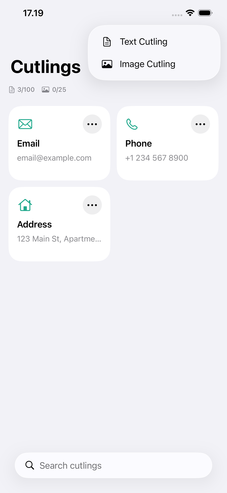
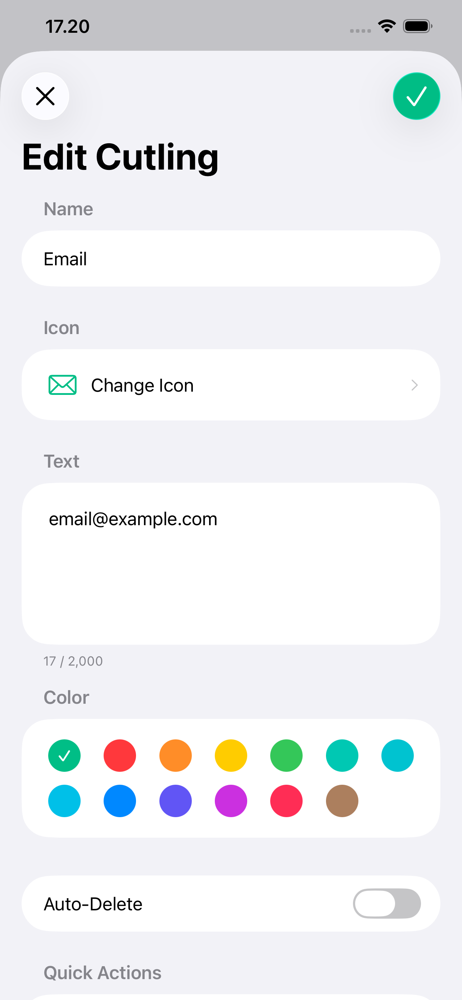
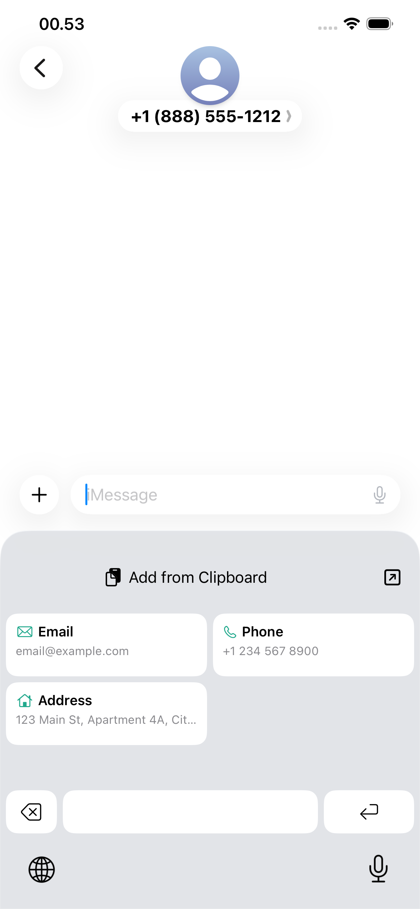
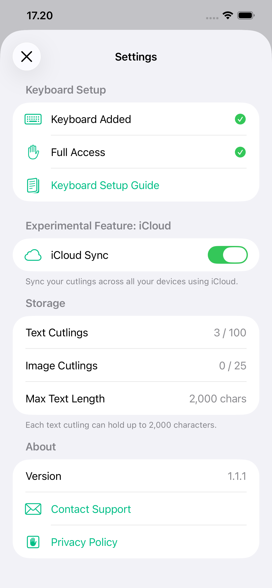

Cutling
Native clipboard manager for iPhone, iPad, and Mac. Save your most-used snippets and images once, then paste them into any app — through a custom keyboard on iOS or a menu-bar hotkey on Mac.
The Idea
Some things get pasted every day: an address, a bank number, a reply you have written a hundred times, a screenshot you keep re-sending. The system clipboard holds exactly one of them, and only until the next copy. Cutling keeps the ones that matter and puts them one tap away, inside whatever app you are already in.
How You Reach It
On iOS the custom keyboard is the point: switch to it in any text field and your snippets are right there, no app switching and no copy-then-return. On Mac it is a menu-bar hotkey. A share extension and an action extension save straight from other apps, and home-screen widgets surface what you use most.
Privacy
No account, no tracking, and no server of mine in the middle. Everything syncs over your own iCloud, so the clipboard history is between your devices and Apple. Free on Mac.
Built With
- Swift and SwiftUI, no third-party dependencies
- One codebase across iPhone, iPad, and Mac
- Keyboard, share, and action extensions plus WidgetKit widgets
- iCloud sync, with an App Group shared store
- Localised into more than forty languages
Availability
On the App Store for iPhone, iPad, and Mac, and as a direct download for macOS.



